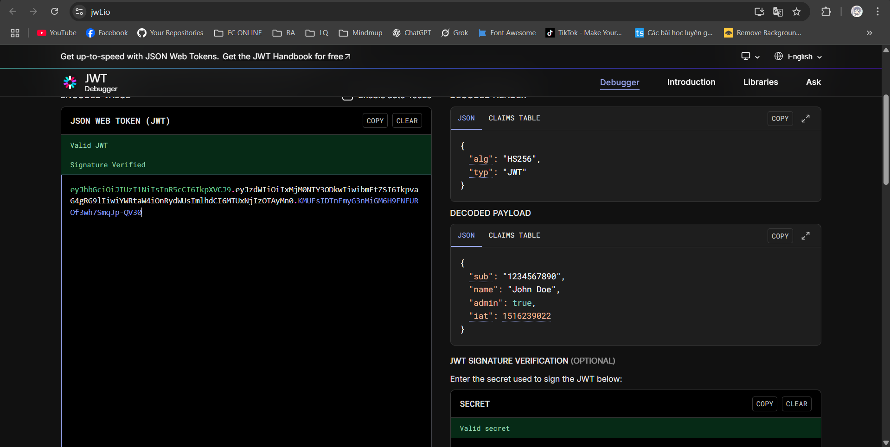

Chuỗi JWT mẫu:
eyJhbGciOiJIUzI1NiIsInR5cCI6IkpXVCJ9.
eyJzdWIiOiIxMjM0NTY3ODkwIiwibmFtZSI6IkNvbmcgdHJ1bmciLCJpYXQiOjE1MTYyMzkwMjJ9.
SflKxwRJSMeKKF2QT4fwpMeJf36POk6yJV_adQssw5cĐây là một token hợp lệ theo định dạng JWT gồm 3 phần: Header, Payload, Signature.
Giải mã chuỗi bằng công cụ jwt.io sẽ hiển thị:
(Hình ảnh giải mã minh họa lấy từ jwt.io với chuỗi mẫu trên)
Sau khi giải mã phần Payload sẽ có kết quả như sau:
{
"sub": "1234567890",
"name": "Cong trung",
"iat": 1516239022
}| Trường | Ý nghĩa |
|---|---|
sub |
Subject – ID của người dùng. Đại diện cho "ai" đang đăng nhập. |
name |
Tên người dùng (tùy chỉnh, không bắt buộc theo chuẩn). |
iat |
Issued At – thời điểm token được phát hành (timestamp UNIX). |
email, role, userId hoặc tệ hơn là CCCD, password thì sẽ gây ra lộ lọt dữ liệu nghiêm trọng.exp quá dài, hacker có thể reuse token lâu dài nếu lấy được.JWT là một công cụ xác thực mạnh, nhưng cần hiểu đúng bản chất: